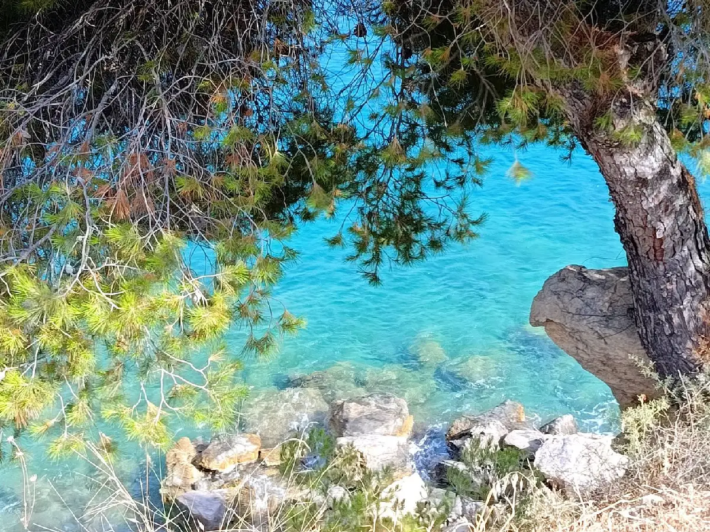
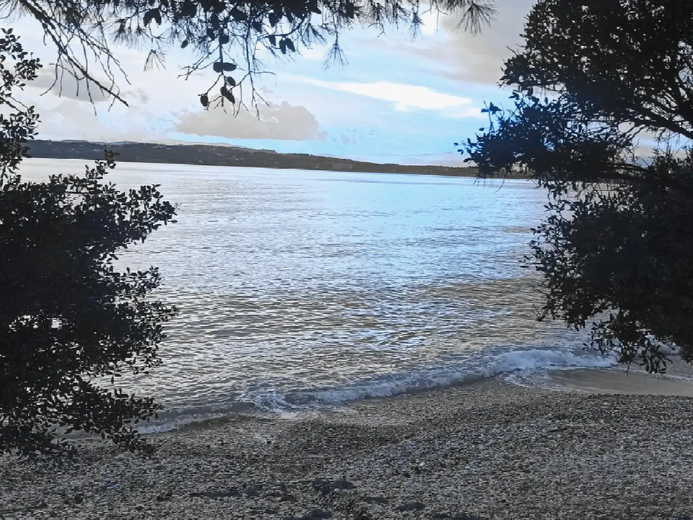

The area
Petrothalassa — an authentic little fishing village
Clear turquoise waters, fine golden sand, and lush serene countryside in the south-east of the historic region of Argolis, on the Peloponnese peninsula.

Petrothalassa · Ermionida
A picturesque, authentically Greek destination
Petrothalassa is situated near Ermioni — just 6 km away — in the south-east of the historic region of Argolis, on the Peloponnese peninsula in mainland Greece.
La Maison Vert Amande and Petrothalassa together form a picturesque, authentically Greek destination — charming, welcoming and renowned for its clear turquoise waters and fine golden sand.
The beach
Natural beauty, peace and quiet
Tourist guides contain very little information about Petrothalassa — but those who find it describe it as “an authentic little fishing village”, and the beach is renowned for its natural beauty.
Despite its popularity, Petrothalassa beach manages to retain a peaceful and relaxed atmosphere, making it an ideal choice for those seeking a tranquil getaway, surrounded by lush, serene countryside.

Ermioni, 6 km away
Everything you need, close by
- Three cash machines
- A physiotherapist
- Estate agents
- Hairdressers
- Three chemists
- Tourist information centre
- Ferry tickets to the neighbouring islands
- Taxis and buses to Kranidi and Kosta
- Cafés, bars and tavernas
- Doctors and dentists
- Car Rentals
- Shops and supermarkets
Thursday Mornings
The weekly farmers’ market
Every Thursday morning, from 7.30 am to 1.30 pm, Ermioni hosts a colourful farmers’ market selling a selection of fresh fruit, fish and local vegetables, various nuts, homemade honey, wine and olive oil, flowers, a range of clothing, shoes, handicrafts and household goods.